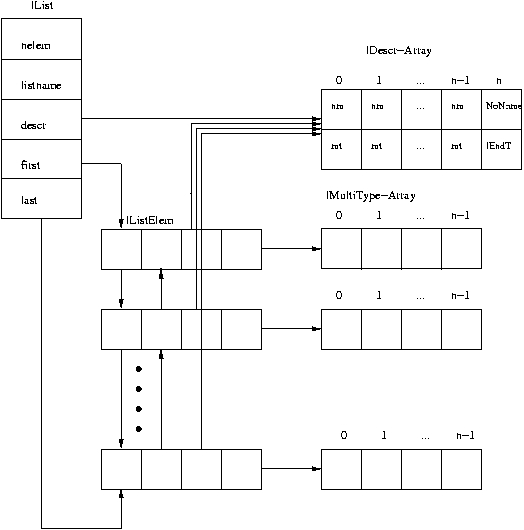

Common Usable List Library
Capabilities of the Common Usable List Library (CULL)
The CULL allows to create and maintain so called CULL lists, which are
the central Grid Engine data structure in which almost all Grid Engine
data, such as jobs, queues, hosts, etc., are stored. The CULL has the following
features:
applicability for every client/server in Grid Engine.
reusability of list management code.
no need for recompilation of client code in case of uncritical data
structure changes.
interface duality - either list oriented or SQL inspired.
fast search functions using hash tables
The CULL is the building block for the Grid Engine Database Interface (GDI
- see here).
Internal data structures
See below for a schematic overview of the CULL internal list data structure:

lList
This is the structure for the list header. The meaning of the different
fields is stated in the comments of the structure definition below. The
position and type information for all list elements is maintained in the
lDescr array. The element data itself can be referenced via the first and
last pointers.
typedef struct {
int nelem; /* number of elements in the list */
char *listname; /* name of the list */
lDescr *descr; /* pointer to the descriptor array */
lListElem *first; /* pointer to the first element of the list */
lListElem *last; /* pointer to the last element of the list */
} lList;
lListElem
The following structure defines a list element being used to store data
in CULL lists. The data storage occurs in arrays of lMultiType unions (see
below). The access to the data is performed by getting the array index
and the field type through the lDescr struct array. The field descr is
used for type checking.
typedef struct {
lListElem *next; /* next lList element */
lListElem *prev; /* previous lList element */
lUlong status; /* status: element in list/ element free */
lDescr *descr; /* pointer to the descriptor array */
lMultiType *cont; /* pointer to the lMultiType array */
} lListElem;
lDescr
The descriptor struct contains two integer fields. One is representing
the name of the field and the other one the associated type. The names
are represented by unique numbers, which can be mapped to enum definitions
or #define statements (the steps to define a list are shown below.)
typedef struct {
int nm; /* unique number that stands for a name */
int mt; /* multitype information */
lHash *hash; /* hashing information */
} lDescr;
lHash
The lHash structure stores information about hash tables to be used for
certain data fields.
For each data field that shall be accessed by a hash table, the corresponding
descriptor (lDesc) contains a reference to an lHash object. The lHash object
defines the type of hash table (unique or non unique keys) and a pointer
to a HashTable object.
typedef struct {
int unique; /* 0 = non unique keys, 1 = unique keys */
HashTable table; /* pointer to HashTable from libs/uti/sge_hash.* */
} lHash;
lMultiType
The lMultiType union consists of various basic types. Which union member
has to be accessed is determined by the type field ("mt") in the lDescr
struct. An array of lMultiType unions contains the data.
typedef union {
lFloat fl; /* float */
lDouble db; /* double */
lUlong ul; /* unsigned long */
lLong l; /* long */
lChar c; /* char */
lInt i; /* int */
lString str; /* char* */
lList *glp; /* sublist */
lRef ref; /* pointer */
lCondition *cp; /* lCondition pointer */
} lMultiType;
Usage of the Generic List
In the directory source/lib/cull you can find one example which demonstrates
how to use CULL lists. To build it use the aimk script: "aimk example1"
List definition
Each CULL list definition consists of following parts:
Definition of some constants which identify
the attributes of a CULL element.
A Section which defines the type of the
attributes of a CULL element.
A List of names used when a attribute name
should be written in readable form.
You can find a definition for a CULL list here.
Lists used in Grid Engine are part of the GDI library. Concerning source
code can be found in source/libs/gdi. Each file whose filename ends with
an capital L before the .h suffix contains CULL list definitions.
Definition of Name Space
Suppose you intend to write a piece of Grid Engine code based on a new
CULL list. One thing you should do is to define the names to be used for
the CULL list elements and you have to make sure that none of your names
conflicts with already existing names. For this purpose you have to select
one or several of the predefined name spaces, which are defined in the
header boundaries.h (see here). By using one
or multiple name spaces, you can create your own list structure as shown
below.
The file source/libs/gdi/sge_boundaries.h contains the name space definition
for Grid Engine.
Application Specific Header File
Each attribute within a CULL object is
uniquely identified by a constant value which will be used to get or modify
its value. For output and debug purpose it is extremely valuable to use
strings instead of enum values. Therefore all the list structures that
shall be used, should be included in an application specific header file.
Here an array of type lNameSpace has to be defined. This table will be
used to convert field names to field numbers and vice versa within the
CULL library.
The example1.h file can be found
here.
The file source/libs/gdi/sge_all_listsL.h containes the array used in Grid
Engine.
List Usage Example
In the the C file
example1.c
the usage of the various CULL list library functions is explained. Run
the corresponding application without any arguments to get a list of scenarios
demonstrated by the example.
Functional Overview
The most important functions of the CULL
are explained in the man page
list_intro(3).
In addition, more high level composite funtions exist, which combine the
use of several basic functions for standard tasks. Using these composite
functions may reduce the size of the code dramatically. There are no man
pages available for the composite functions currently but they are documented
in the sourcecode. Here their names are listed:
lGetElemCaseStr(), lGetElemDescr(), lGetElemHost(),
lGetElemIndex(), lGetElemStr(), lGetElemStrLike(), lGetElemUlong(), lGetSubCaseStr(),
lGetSubHost(), lGetSubStr(), lGetSubUlong(), lAddElemUlong(), lAddElemStr(),
lAddSubStr(), lAddSubUlong(), lDelElemCaseStr(), lDelElemHost(), lDelElemStr(),
lDelElemUlong(), lDelSubCaseStr(), lDelSubStr(), lDelSubUlong()